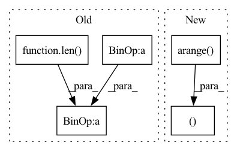

Pattern ID :32895
Before Change
// Push tags away from zero
non_zero_loss = self.triplet_margin - (total_tags ** 2).sum(dim=-1) / tag_len
non_zero_loss = torch.max(non_zero_loss, torch.zeros_like(non_zero_loss)).sum() / len( non_zero_loss)
stitch_losses.append(similarity_loss + total_neg_loss + non_zero_loss)
// // build up losses for every stitch
// for stitch_id in range(gt_stitches[pattern_idx].shape[0]):After Change
flat_stitch_tags = stitch_tags.view(batch_size, -1, stitch_tags.shape[-1])
// https://stackoverflow.com/questions/55628014/indexing-a-3d-tensor-using-a-2d-tensor
left_sides = flat_stitch_tags[torch.arange( batch_size) .unsqueeze(-1), gt_stitches[:, 0, :] ]
right_sides = flat_stitch_tags[torch.arange(batch_size).unsqueeze(-1), gt_stitches[:, 1, :]]
total_tags = torch.cat([left_sides, right_sides], dim=1)
In pattern: SUPERPATTERN
Frequency: 4
Non-data size: 5
Instances Fragment ID: 95423121
Project Name: maria-korosteleva/garment-pattern-estimation
Commit Name: 0e217787b4fe153fe6604429982525be356096d0
Time: 2020-11-03
Author: mariako@kaist.ac.kr
File Name: nn/metrics.py
M Class Name: PatternStitchLoss
N Class Name: PatternStitchLoss
M Method Name: __call__(4)
N Method Name: __call__(3)
M Parent Class:
N Parent Class:
M File Name: nn/metrics.py
N File Name: nn/metrics.py
M Start Line: 90
M End Line: 159
N Start Line: 84
N End Line: 145
Before Change
loss, _ = torch.max((ideal_difference - score_difference), 0)
loss = torch.clamp(loss, min=0)
return (loss.sum() + loss.pow(2).sum()) / len( positive_scores)
After Change
if negative_items is not None and positive_items is not None:
negative_items = (
negative_items[highest_negative_inds, torch.arange(len(positive_items)) ].squeeze()
)
return hinge_loss( Fragment ID: 95423122
Project Name: shoprunner/collie
Commit Name: 8ed003ef3acfddc3d099fcf2966cc7e78b048729
Time: 2021-04-26
Author: nathancooperjones@gmail.com
File Name: collie_recs/loss/hinge.py
M Class Name: AnonimousClass
N Class Name: AnonimousClass
M Method Name: adaptive_hinge_loss(7)
N Method Name: adaptive_hinge_loss(6)
M Parent Class:
N Parent Class:
M File Name: collie_recs/loss/hinge.py
N File Name: collie_recs/loss/hinge.py
M Start Line: 160
M End Line: 183
N Start Line: 91
N End Line: 173
Before Change
torchvision.transforms.Normalize([0.5, 0.5, 0.5], [0.5, 0.5, 0.5]),
])
dataset = torchvision.datasets.ImageFolder("data/ffhq1024", transform=transforms)
nb_test = int(len(dataset) * cfg.test_size)
nb_train = len( dataset) - nb_test
train_dataset, test_dataset = torch.utils.data.random_split(dataset, [nb_train, nb_test])
elif task == "ffhq256":
transforms = torchvision.transforms.Compose([After Change
torchvision.transforms.Normalize([0.5, 0.5, 0.5], [0.5, 0.5, 0.5]),
])
dataset = torchvision.datasets.ImageFolder("data/ffhq1024", transform=transforms)
train_idx, test_idx = torch.arange( 0, 50_000 - 1), torch.arange(50_000, len(dataset))
train_dataset, test_dataset = torch.utils.data.Subset(dataset, train_idx), torch.utils.data.Subset(dataset, test_idx)
// nb_test = int(len(dataset) * cfg.test_size)
// nb_train = len(dataset) - nb_test
// train_dataset, test_dataset = torch.utils.data.random_split(dataset, [nb_train, nb_test]) Fragment ID: 95423092
Project Name: vvvm23/vqvae-2
Commit Name: 65a5f31fbf7c627fdcbcc8cad435e064943608dc
Time: 2021-04-27
Author: alexander.f.mckinney@durham.ac.uk
File Name: datasets.py
M Class Name: AnonimousClass
N Class Name: AnonimousClass
M Method Name: get_dataset(3)
N Method Name: get_dataset(3)
M Parent Class:
N Parent Class:
M File Name: datasets.py
N File Name: datasets.py
M Start Line: 10
M End Line: 33
N Start Line: 10
N End Line: 33